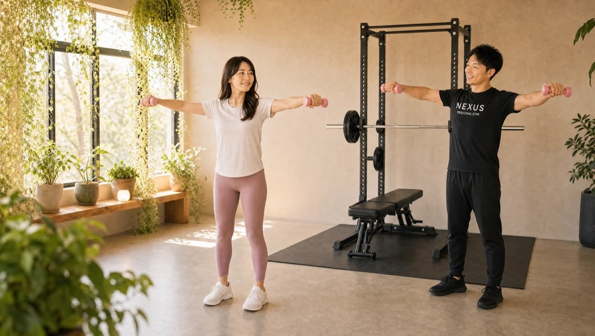
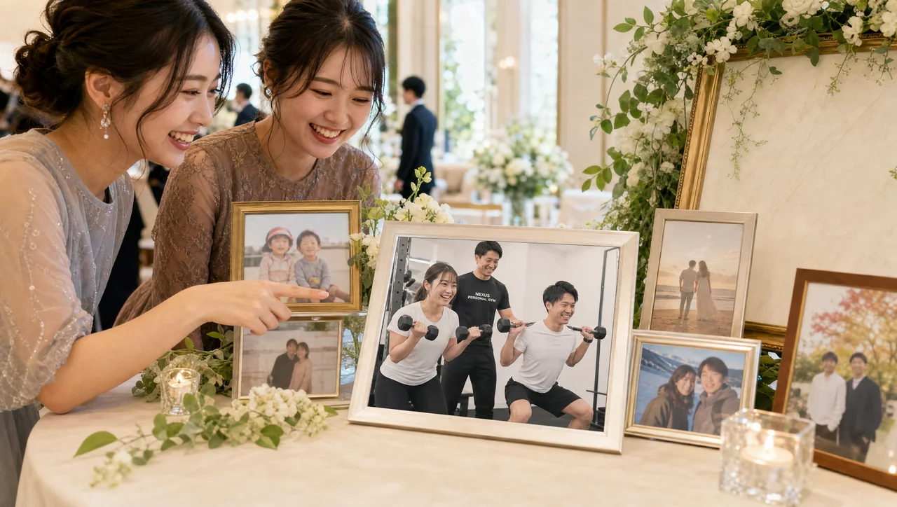

NEXUS Personal Gym ／ 東京都中野区
NEXUSパーソナルジム 沼袋店｜自分のペースを取り戻す完全個室ジム

西武新宿線・沼袋駅から通える、完全個室の隠れ家パーソナルジムです。沼袋店の魅力は、「押しつけのない」上質な静けさ。無理に追い込まず、その日の体調と疲労度を見て負荷を調整するから、頑張りすぎず、それでいて安心して全力を出せます。こぢんまりとした雑音のない空間は、通うだけで気分が整うと評判。沼袋の穏やかな住宅街と調和した、自分のペースを大切にできるジムです。毎日8:00〜23:00・手ぶらOK・LINE予約で、無理なく続けられます。
- ブライダル対応
- 完全個室
- 沼袋駅から
- 押しつけない指導
- 静かな空間
- 毎日8:00〜23:00
この店舗の特徴
NEXUS沼袋店は、西武新宿線・沼袋駅から通える完全個室パーソナルジム。沼袋の穏やかな住宅街にある、こぢんまりとした隠れ家ジムです。この店舗いちばんの個性は、「がんばらせすぎない」上質な静けさ。トレーナーは無理に「押して」こず、その日の体調と疲労度をていねいに見て負荷を決めるので、安心して全力を出せます。会員からは「無理に追い込まず、体調を見て負荷を調整してくれるから安心」「小さな変化にも気づいて声をかけてくれる」という声をいただいています。そして、雑音のない落ち着いた完全個室。BGMや照明も静かなトーンで整え、大型ジムのざわつきや他人の視線が苦手な方でも、自分だけの空間で集中できます。トレーニング以外の食事や生活の相談も自然にできる、ちょうどいい距離感。通うほどに心が軽くなる——それが沼袋店の通い方です。ウェア・タオル・ドリンク・プロテインまで無料提供の手ぶら通いOK、予約はLINEでサッと完結します。
押さない。でも、見逃さない

「ジムはきついもの」「トレーナーにガツガツ追い込まれそう」——そんなイメージで一歩を踏み出せずにいる方に、沼袋店はぴったりの場所です。沼袋店のトレーナーは、無理に「押して」きません。その日のあなたの体調と疲労度をていねいに見て、ちょうどいい負荷を一緒に決めます。だから頑張りすぎず、それでいて安心して全力を出せる。「無理に追い込まず、その日の体調と疲労度で負荷を調整してくれるから、安心して全力を出せる」という声を多くいただいています。押さない指導だからといって、手を抜くわけではありません。むしろマンツーマンだからこそ、あなたのフォームやコンディションの「ほんの小さな変化」も見逃さず、すかさず声をかけます。追い込むことだけがトレーニングではない。自分のペースを守りながら、確かに前に進む——それが沼袋店の指導です。
トレーナーが無理に押してこないのが本当にありがたいです。その日の体調と疲労度を見て負荷を決めてくれるので、安心して全力を出せます。小さな変化にも気づいて声をかけてくれるので、続けられています。
雑音のない、落ち着いた空間

大型ジムの人混みやマシンの音、他人の視線——そうしたざわつきが苦手で、運動から足が遠のいていませんか。沼袋店は、こぢんまりとした雑音のない完全個室が最大の魅力です。会員からは「騒がしくない落ち着いた空間で、居心地が良くて通うだけで気分がいい」「沼袋で一番のお気に入り」という声をいただいています。BGMや照明も落ち着いたトーンで整えているので、自分だけの静かな空間で、目の前のトレーニングに集中できます。沼袋の穏やかな住宅街と調和した、ざわつきのない環境。慌ただしい日常から少し離れて、自分の身体と静かに向き合う時間は、思っている以上に心を整えてくれます。「通うだけで気分がいい」——その居心地の良さこそ、続けられる何よりの理由です。
こぢんまりとして落ち着いた、雑音のない空間が気に入っています。居心地が良くて、通うだけで気分がいいです。静かな環境で集中できるので、沼袋で一番のお気に入りのジムになりました。
トレーニング以外のことも、自然と話せる

パーソナルジムの価値は、トレーニングそのものだけではありません。沼袋店で多くの会員が挙げるのが、トレーナーとの「ちょうどいい距離感」です。よく話を聞いてくれるので、食事のことも、それ以外のちょっとした悩みも、自然と相談できる。「話を聞いてくれるので、食事のことも、それ以外のことも自然と相談できて心が軽くなる」という声をいただいています。近すぎず、遠すぎず。押しつけがましくないのに、いつもあなたを見てくれている——その距離感が、通う時間を単なる運動以上のものにしてくれます。食事についても、無理な制限ではなく続けられる範囲で。月額3,000円（税込）のAI食事指導なら、写真を送るだけでアドバイスが届き、日々の食習慣づくりを後押しします。身体だけでなく、気持ちまで軽くなる。それが沼袋店に通う時間です。
よく話を聞いてくれるので、食事のことも、それ以外のことも自然と相談できます。トレーニングだけでなく、通うたびに心が軽くなるのを感じます。押しつけがましくない距離感が心地よいです。
沼袋駅からすぐ、新井薬師前・野方からも
沼袋店は、西武新宿線・沼袋駅からすぐの便利な立地です。沼袋駅を日常的に使う方はもちろん、隣の新井薬師前駅や野方駅からも通いやすく、中野・落合方面にお住まいの方にも便利。穏やかな住宅街の中にあるので、仕事帰りにも、休日の外出ついでにも、肩の力を抜いて立ち寄れます。毎日8:00〜23:00の営業なので、早朝のひと汗にも、一日の終わりのリセットにも対応。ウェア・タオル・ドリンク・プロテインまで無料提供なので、通勤バッグひとつで手ぶらでOKです。予約・変更はLINEで完結し、6時間前まで無料でキャンセル可能。忙しい毎日でも、自分のペースで無理なく通い続けられる環境です。沼袋という街の静けさと調和した、通うだけで気分が整うジム。まずは無料体験で、その居心地を体感してみてください。
まずは無料体験から

「運動は久しぶり」「きついのは続かなかった」——そんな方こそ、まずは気軽に無料体験へお越しください。沼袋店の無料体験は、いきなりハードに追い込むことはありません。カウンセリングであなたの体調・目標・不安をていねいにうかがい、姿勢チェックのあと、その日のコンディションに合った軽めのトレーニングを体験いただきます。押しつけのない指導と、雑音のない落ち着いた空間の心地よさを、まずはその身体で感じてみてください。無理な勧誘は一切ありません。手ぶらでOK、予約はLINEでサッと完結します。当日入会なら入会金が55,000円→15,000円（税込）に割引。自分のペースを取り戻す一歩を、沼袋の静かな個室から始めましょう。
Price料金プラン
入会金は通常55,000円、無料体験当日入会で15,000円（税込）に割引。全店舗共通の料金です。
Reviewsお客様の声
出典：Google マップ
NEXUS沼袋店はGoogle口コミ82件で★5.0を維持。押しつけのない体調に合わせた指導と、雑音のない落ち着いた空間が評価されています。
トレーナーが無理に押してこないのが良いです。体調と疲労度を見て負荷を決めてくれるから、安心して全力を出せます。自分のペースを大切にしてもらえるので、運動が苦手でも続けられています。
こぢんまりと落ち着いた、雑音のない空間で、通うだけで気分がいいです。静かな環境で集中できるので、沼袋で一番のお気に入りになりました。居心地の良さが続けられる理由です。
小さな変化にも気づいて声をかけてくれます。トレーニング以外の相談も自然にできて、通うたびに心が軽くなります。押しつけがましくない、ちょうどいい距離感がありがたいです。
Bridal結婚式前のボディメイクにも対応
沼袋店では、挙式日から逆算した結婚式前のボディメイクにも対応しています。背中・二の腕・デコルテ・ウエストなど、ドレスで視線が集まる部位を完全個室のマンツーマンで整えます。挙式日から逆算した90日・60日プランで、式当日にピークを合わせます。
挙式日からの逆算タイムライン｜ブライダル専用ページを見るこの店舗のブライダル対応をくわしく

「ドレスの試着で二の腕が気になった」「背中の開いたデザインを、体型を理由に諦めたくない」——挙式という動かせない期日があるからこそ、ボディメイクは最後までやり切れます。沼袋店では、まず挙式日とドレスのデザインをうかがい、背中・二の腕・デコルテ・ウエストという、ドレスでもっとも視線が集まる部位から優先順位をつけていきます。完全個室のマンツーマンだから、人目を気にせず自分の身体とだけ向き合えます。

残された日数によって、やるべきことは変わります。沼袋店では挙式日から逆算した90日プラン・60日プランを用意し、「いつまでに、どの部位を、どこまで」を最初に設計します。極端な食事制限で当日フラフラ……ということがないよう、その日のコンディションから逆算する無理のない指導で、式当日にピークを合わせます。会員の約85%が女性で、ブライダルのご相談は日常的。体に不必要に触れないノータッチ指導を基本にしているので、はじめての方も安心です。

週を追うごとに、ドレスの試着で鏡に映る自分が変わっていきます。背中がすっと伸び、二の腕のたるみが引き締まり、デコルテに華やかさが出る。「このデザインで大丈夫かな」から「このドレスを選んでよかった」へ——目標が数字ではなく“当日の自分の姿”だからこそ、モチベーションが途切れません。沼袋エリアで挙式を予定されている方は、エリア内の式場への下見や打ち合わせの動線に、そのままトレーニングを組み込めます。

迎えた挙式当日。積み重ねた90日・60日は、鏡の前の安心感になって返ってきます。姿勢よく背筋を伸ばして立ち、写真のどの角度でも堂々といられる——それは、頑張ってきた自分だけが手にできる自信です。沼袋店は、その一日のために全力で伴走します。

挙式は、新しい生活のスタートでもあります。せっかく作り上げた身体を、そのまま新生活の習慣に。沼袋店は毎日8:00〜23:00営業・月4回18,000円（1回4,500円〜）から続けられるので、挙式後の体型維持から、将来の産後の体型戻しまで長く伴走できます。全国約70店舗のネットワークがあるため、引っ越しや里帰りの際も最寄り店舗へ。「一生に一度」のために始めた習慣が、その後の人生を支える土台になります。
挙式まで残り80日で駆け込みました。背中の開いたドレスに合わせて、二の腕と背中を中心にプランを組んでもらい、当日は自信を持って写真に写れました。式後もそのまま通っています。
上記はサービス内容をわかりやすく伝えるためのモデルケース（イメージ）であり、実在するお客様の口コミではありません。Google口コミは本ページ内の該当セクションに実際の内容を要約して掲載しています。
挙式日からの逆算タイムライン｜ブライダル専用ページを見るアクセス
- 店舗名
- NEXUSパーソナルジム 沼袋店
- 住所
- 〒165-0025
東京都中野区沼袋1-38-8 CONTEL NAKANO 101号 - 最寄り駅
- 西武新宿線 沼袋駅（新井薬師前駅・野方駅からも通えます）
- 営業時間
- 毎日 8:00〜23:00
- 電話番号
- 050-1790-8493
沼袋店のよくある質問
Q沼袋駅の近くにパーソナルジムはありますか？+
Qガツガツ追い込まれるのが苦手です。合いますか？+
Q静かな環境でトレーニングしたいのですが可能ですか？+
Q挙式まで3ヶ月ですが、結婚式に間に合いますか？+
Qドレスで気になる背中や二の腕を集中的に絞れますか？+
Q結婚式が終わった後も通い続けられますか？+
よくある質問（全店共通）
料金・制度などNEXUS全店に共通するご質問です。さらに詳しくは110問のFAQをご覧ください。
Q料金はいくらですか？+
Q手ぶらで通えますか？+
Qキャンセルはいつまでできますか？+
Q食事指導はありますか？+
Qトレーナーはどんな人ですか？+
Q女性会員は多いですか？+
Q体験の流れは？+
NEXUSパーソナルジムの特徴・料金をもっと見る